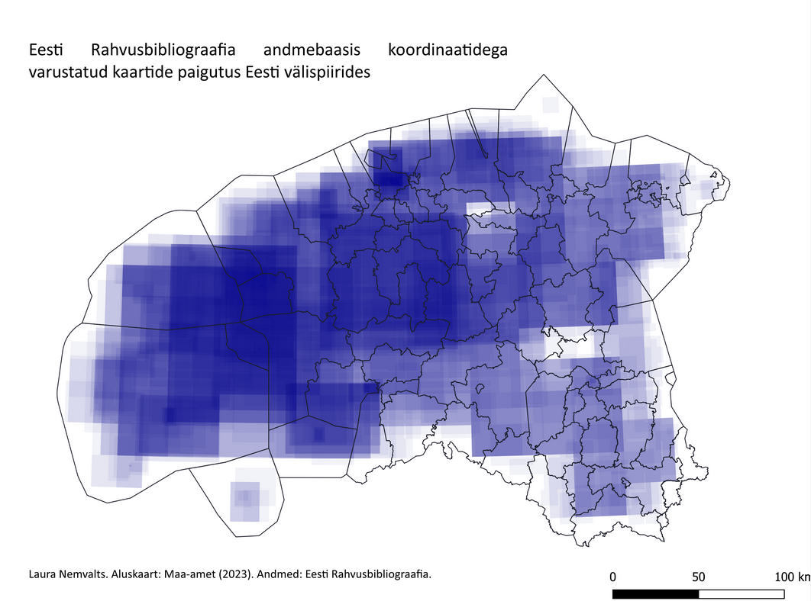
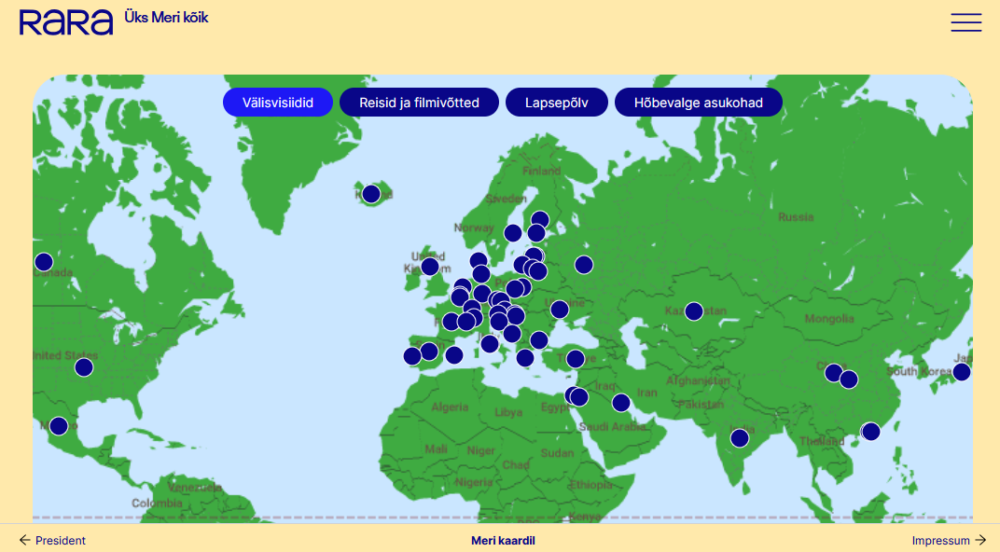
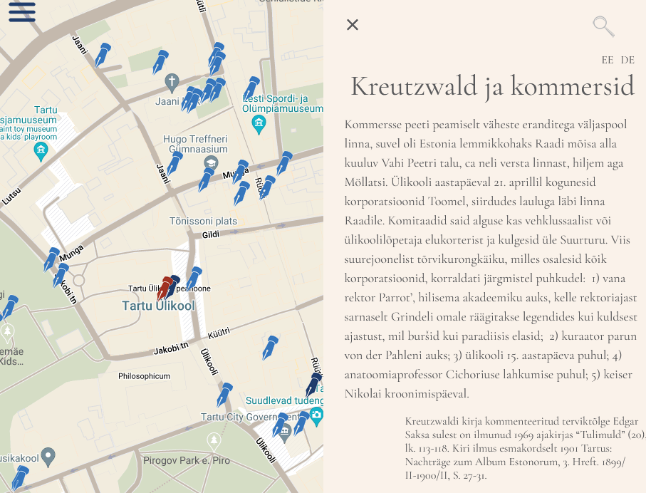
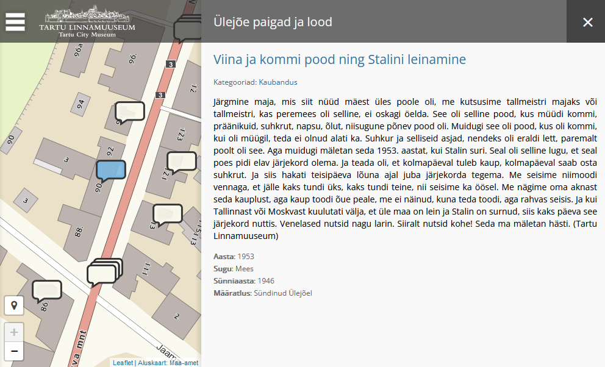
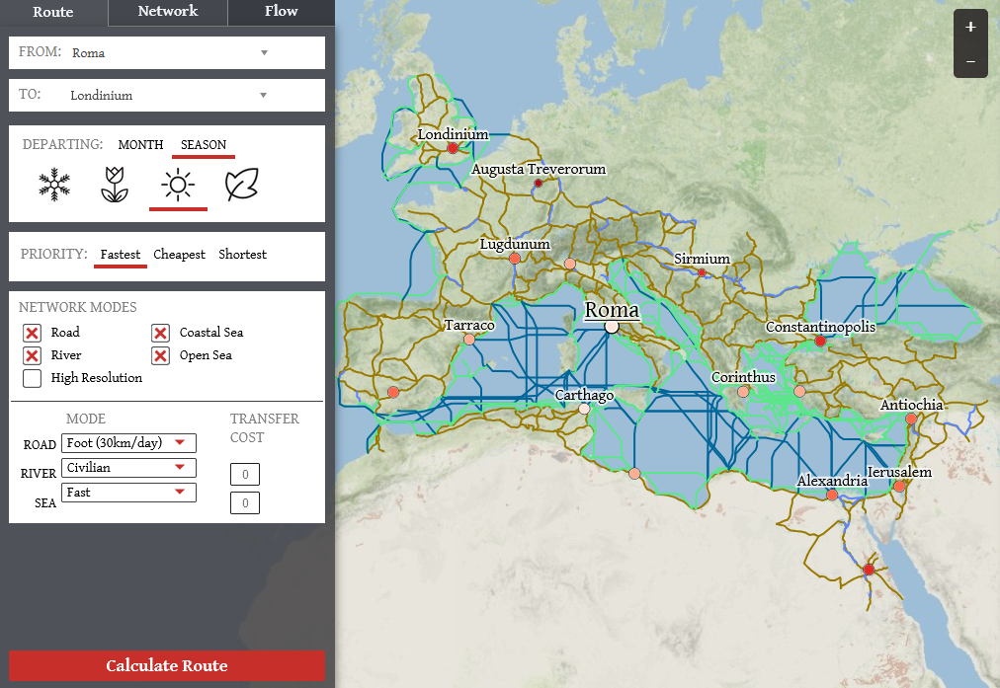
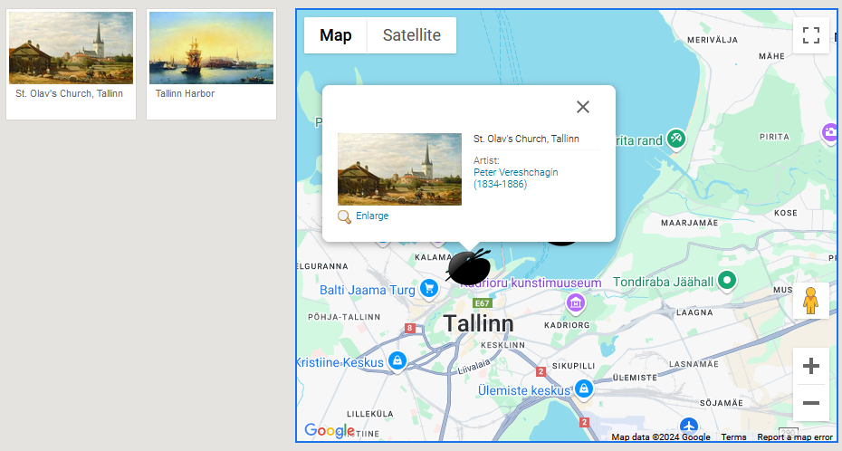
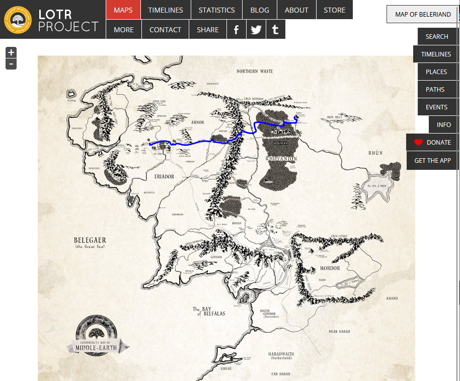
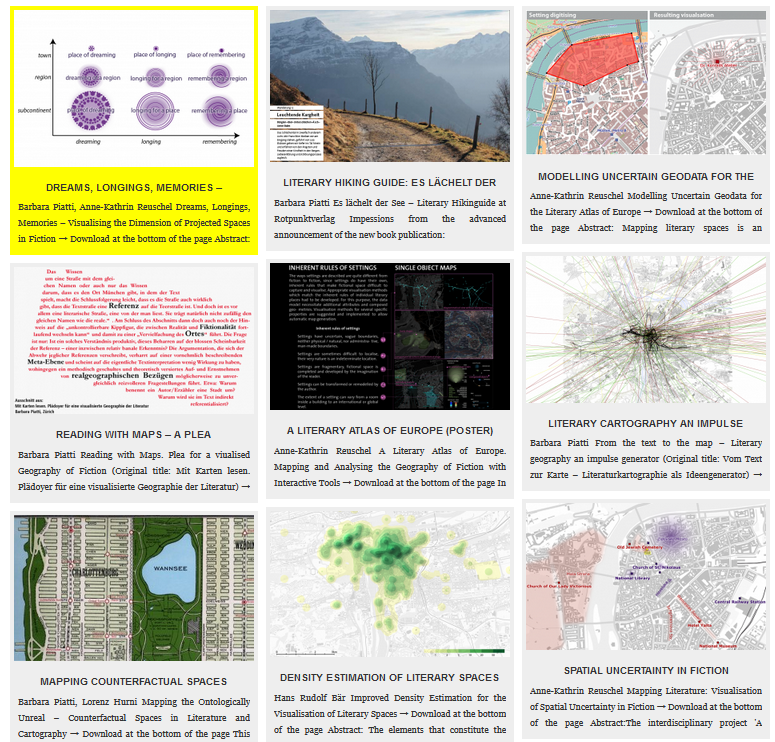

HVEE.00.045 Geoinfosüsteemide rakendusvõimalused humanitaarteadustes
sügis 2025
Praktikum 1 Sissejuhatus
1.1 Kursuse korraldusest
- 3 EAP
- K kell 12.15-13.45
- Lossi 3-425
- Kontakt ja info: maarja-liisa.pilvik@ut.ee
- Hindamine arvestuslik. Kursuse lõpuks peavad olema esitatud
- vabal valikul 2 kodutööd 3st. Esitamiseks aega kursuse lõpuni;
- lõpuprojekt. Esitlused 10. ja 17. detsembril. Lõpuprojekti esitamise tähtaeg 7.detsember kell 23.59. Soovijatele konsultatsioonid kokku lepitud aegadel.
- vabal valikul 2 kodutööd 3st. Esitamiseks aega kursuse lõpuni;
- Kodutööde teemad:
- story map’i (kaardiloo) tegemine,
- kaardi georefereerimine,
- andmestike ühendamine ja visualiseerimine.
- story map’i (kaardiloo) tegemine,
- Arvestuse saamiseks tuleb võtta osa vähemalt 70% auditoorselt toimuvatest praktikumidest, st kohapeal tuleb osaleda vähemalt 10 kohtumisel 14st. Vajadusel on võimalikud erikokkulepped. Tänase praktikumi eest läheb kohalkäimine kõikidele automaatselt kirja.
- Materjale hoitakse ja täiendatakse kursuse kodulehel ja Moodle’is.
1.2 Mis on geoinfosüsteemid?
Geoinfosüsteem on arvutipõhine süsteem ruumiliste ja mitteruumiliste andmete kogumiseks, haldamiseks, analüüsiks, visualiseerimiseks ja jagamiseks. Selle abil on võimalik ruumisuhete kaudu mõista oma andmeid paremini või teisest vaatepunktist ning sedakaudu teha kaalutletumaid otsuseid.
Andmete
- kogumine: nt paberkaartide digiteerimine, päringud repositooriumidest, käsitsi sisestamine;
- haldamine: nt andmebaaside struktureerimine, dokumenteerimine;
- analüüs: nt erinevate andmekihtide ühendamine, kattuvate alade, puuduvate väärtuste, puhveralade, teekondade arvutamine;
- visualiseerimine: nt kaartide koostamine ja kujundamine;
- jagamine: nt projektide majutamine veebis, andmete ja metaandmete publitseerimine.
![Mida GISiga tehakse? [@Wallentin2015]](imgs/1_gis_wordcloud_wallentin2015.png)
Joonis 1.1: Mida GISiga tehakse? (Wallentin et al. 2015)
'](imgs/1_GISwordcloud.png)
Joonis 1.2: Sõnapilv Wikipedia artiklist ‘Geographic information system’
Ehkki vahel käsitletakse geoinfosüsteeme kui mingit kindlat tarkvara (nt ArcGIS, QGIS), on GIS definitsioonilt pigem mingite funktsionaalsuste kogum. See tähendab ka seda, et erinevad tarkvarad või selle osad võivad spetsialiseeruda erinevatele GISi funktsioonidele.

Joonis 1.3: Populaarsed GIS tarkvarad
Kuigi GIS võib talletada ka mitteruumilist infot, moodustavad kõige olemuslikuma osa geoinfosüsteemidest siiski just ruumiandmed. Kõige sagedamini kasutatakse GISi geograafiliste andmete töötlemiseks, ent neid saab põhimõtteliselt kasutada mis tahes andmete jaoks, millel on mingid dimensioonid (nt väljamõeldud kohad; inimkeha; planeetide pinnad; puuviljad jne). Geoinfosüsteemidest võib seega kõige lihtsamal moel mõelda kui koordinaatidega varustatud andmebaasidest ja nende sisu analüüsimiseks ja visualiseerimiseks mõeldud tööriistadest.
Tüüpiliselt toimub andmete analüüs GISis kihtide põhimõttel: eri tüüpi infot hoitakse erinevatel andmekihtidel ning nende ühendamisel sünteesitakse uut teadmist.
](imgs/1_gis_natgeo.jpg)
Joonis 1.4: Andmete hoidmine GISis kihtidena, GIS NatGeo
Nagu öeldud, võivad GIS-andmebaasid sisaldada nii ruumilist kui ka mitteruumilist infot. Ruumilist infot väljendatakse koordinaatidega (nt x, y, z, pikkus- ja laiuskraad, kõrgus merepinnast) ning need määravad iga objekti asukoha, kasutades kas punkti, joont, polügooni või pikslit. Mitteruumilist infot, mis mingit kohaga seotud on, väljendavad atribuudid. Atribuudid on tüüpiliselt salvestatud tabelina, kus iga objekt on eraldi real ning iga atribuut eraldi tulbas, või mingis muus (nt hierarhilises) andmebaasistruktuuris.

Joonis 1.5: Näide QGISi atribuuttabelist
Infotehnoloogia arenguga on muutunud võimalikuks säilitada digitaalsel kujul atribuutidena peaaegu mis tahes tüüpi andmeid, nt struktureerimata tekste (raamatuid, veebilehti), pilte, videoid, helifaile. Kuna geoinfosüsteemid on arvutipõhised, nõuavad need siiski, et andmed oleksid mingil moel formaliseeritud. See tähendab ka vahel seda, et tuleb andmetele suruda peale jäigad kategooriad ka seal, kus kategooriatevahelised piirid on tegelikult sujuvad ning on palju üleminekualasid.
1.3 Geoinfosüsteemide ajaloost
)](imgs/1_Snow-cholera-map.jpg)
Joonis 1.6: John Snow koolera leviku kaart (1855) (Wikimedia Commons)
](imgs/1_Timeline-of-major-GIS-events.png)
Joonis 1.7: GISi ajajoon
- Geoinfosüsteeme hakati arendama ja kasutama 1960ndatel, kui akadeemilistes ringkondades hakati uurima kvantitatiivse ja arvutusliku geograafia võimalusi.
- GISi “isaks” peetakse Roger Tomlinsoni (1933-2014), kes 60ndate alguses arendas Kanadas välja kõige esimese geoinfosüsteemi maailmas (Canada Geographical Information System CGIS). Süsteemi ülesandeks oli talletada, võrrelda ja analüüsida Kanada maakasutuse andmeid.
- GISi ulatuslikum areng toimus 1970ndatel ning 1980ndate lõpuks oli fookus juba sellel, kuidas parandada GISi kasutuskogemust.
- Esimestel aastakümnetel oli GIS põhiliselt haldus- ja militaarkasutuses. 1982. aastal tõi ESRI (Environmental Systems Research Institute, Inc.) välja esimese kommertsliku GIS-toote, ARC/INFO, mis põhines Harvard Laboratory Computer Graphicsi poolt arendatud esimesel vektoritega töötaval GISil. ESRI roll GIS-tarkvara arendajana on sellest alates ainult kasvanud.
- 1990ndatest alates hakkas GISi kasutajaskond kiiresti kasvama. Seda soodustas järjest väiksemate, odavamate ja kiiremate arvutite tootmine, andmete ulatuslikum kättesaadavus ning uute satelliitide ja kaugseiretehnoloogia kasutuselevõtt.
- Viimast kaht kümnendit on iseloomustanud lisaks tehnoloogia jätkuvale arengule ka vabavaralise GIS-tarkvara teke, mis on teinud ruumiandmete kasutamise ja analüüsi kättesaadavamaks nii tavakasutajale kui ka talle pakutavate toodete arendajatele. On toimunud nn ruumiline revolutsioon (Geospatial Revolution), mis on muutnud nii seda, kuidas me liigume, otsuseid teeme ja oma lugusid jagame.
Praeguseks kasutatakse geoinfosüsteeme näiteks
- telekommunikatsioonis,
- linnaplaneerimises (näiteks Tallinna Ligipääsetavuse infosüsteem),
- logistikas, navigeerimises (näiteks Veeteede Ameti Nutimer),
- meteoroloogias,
- katastroofide ohjamisel ja leevendamisel,
- tervishoius,
- kuritegevuse analüüsil,
- …
Vt veel rakendusvaldkondi nt siit.
1.4 Ruumiandmed ja GIS humanitaarteadustes
Ehkki näiteks arheoloogias on ruum ja ruumiandmed olnud alati kesksel kohal, on teistes humanitaaria valdkondades (nt ajaloos, kirjandusteadustes) toimunud viimase paarikümne aasta jooksul nn ruumiline pööre (Spatial Turn). Ruumiline pööre algas tegelikult geograafia valdkonna seest: pelga inimelu või -tegevuse mahuti või “lava” tõlgenduse asemel seati fookusesse ruum kui pidevalt muutuv ja kompleksne sotsiaalne moodustis. See võimaldas leida enam ühist keelt ka sotsiaal- ja humanitaarteadlastega.
Humanitaarteadustes on küll ruumi ja koha mõistetel olnud alati üsna prominentne roll, ent ruumilise pöörde käigus seati fookus eksplitsiitselt sellele, kuidas sotsiaalsete muutuste ning laiemalt inimtegevuse seletamiseks tuleb võtta arvesse ka ruumilist komponenti. Sealjuures rõhutatakse, et ruum võib ajas muutuda ning et ruumid võivad olla nii füüsilis-geograafilised kui ka abstraktsed, metafoorsed või väljamõeldud (vt nt Keele & Kirjanduse erinumbrit “Keel ja ruum”). Nõnda on näiteks keskaegses kirjanduses narratiivi loomise seisukohast võrdselt olulised nii London kui ka Camelot; erinevate keelte kohaväljendeid (nt kaassõnu ees, kõrval, taga) uurides saame teada, kuidas mingi keele kõneleja end mõtteliselt millegi suhtes positsioneerib (kas absoluutselt või relatiivselt), kuidas tajutakse aega ruumisuhete kaudu jne.
Ruumi asetamine kesksele positsioonile on digihumanitaaria katusmõiste alla sünnitanud interdistsiplinaarsed valdkonnad nimega geohumanitaaria (GeoHumanities) ja ruumihumanitaaria (Spatial Humanities), mis ühendavad GISi ja klassikalised ruumianalüüsi meetodid (nt teekondade arvutamine, kaartide koostamine) uuemate arvutuslike meetoditega (nt loomuliku keele töötlus, võrgustikuanalüüs, simulatsioonimudelid, tehisnärvivõrgud). Ruumihumanitaaria ja geohumanitaaria vaheline piir ei ole päris selge ning sageli kasutatakse mõisteid sünonüümidena, samuti on mõlemal valdkonnal suur ühisosa inimgeograafiaga. Kui aga eristust tehakse, siis loetakse geohumanitaaria valdkonda pigem konkreetsete, geograafiliste kohtade ja ruumidega tegelevad uurimused ning ruumihumanitaaria alla ka uurimused, mis analüüsivad sümboolseid, ähmaseid või väljamõeldud ruume.
Ehkki mingites humanitaaria valdkondades (nt arheoloogia) on ka geoinfosüsteemid olnud kasutusel juba aastakümneid, on nende võimalusi hakatud teistes humanitaarteaduste harudes rohkem kasutama alles viimase kümne-viieteistkümne aasta jooksul. See on ühelt poolt seotud arvutite võimsuse ning tarkvara ja andmete kättesaadavuse plahvatusliku kasvuga, ent ka teatava suhtumise muutusega humanitaaride seas. Ehkki humanitaaria uurimisobjektid ja andmed on sageli ebatäpsed, hägusad, täpselt määramatud ja fragmentaarsed ning nende analüüs GISi abil pakub endiselt rohkelt väljakutseid, ei nähta tehnoloogias kõigest positivistlikku ja humanitaaraladele olemuslikult sobimatut analüüsivahendit. GISi väärtus humanitaarteadustele seisneb eeskätt selles, et kohainfo (nt kohanime või koordinaatide) kaudu on võimalik ühendada eri formaatides väga erinevat infot, seda visualiseerida ning erinevatest infokihtidest sünteesida uut teadmist. Sealjuures on nõuded absoluutsele täpsusele humanitaarias oluliselt leebemad.

Joonis 1.8: Andrus Saareste käsikirjaline murdekaart sõna ‘keegi’ alaleütleva käände (‘kellelegi’, ‘kellegile’ jm) varieerumisest.
Geo- ja ruumihumanitaaria fookus ei ole aga pelgalt tehniliste analüüsimeetodite ja tööriistade kasutamisel ja arendamisel, vaid ka (või isegi eelkõige) ruumide ja kohtade teoreetilistel konstruktsioonidel ning nende muutumisel ajas ning eri kultuurides: kuidas mingites ruumides elatakse, kuidas mingeid ruume sotsiaalselt konstrueeritakse ja kuidas need ruumid omakorda mõjutavad majandust, poliitikat, kultuuri jne.
Siiski on vahest enamgi neid, kes ühel või teisel moel ruumiandmeid ja geoinfosüsteeme oma töös ära kasutavad, ilma et ennast või oma uurimistööd spetsiifiliselt ruumi- või geohumanitaaria valdkonna kaudu defineeriksid. Sellise üldise ruumiandmete analüüsi tööriistakasti koostamisega tegeleme ka siin kursusel.
1.4.2 Arheoloogia
![Muististe jaotumise visualiseerimine ja maastiku nähtavuse analüüsimine [@Kimber2016]](imgs/1_arheo_example_teemakaart_kimber.jpeg)
![Muististe jaotumise visualiseerimine ja maastiku nähtavuse analüüsimine [@Kimber2016]](imgs/1_arheo_example_kimber_lohukivid_totalviewshed.jpg)
![Muinasaegsete asulakohtade ennustav mudeldamine [@Haav2014]](imgs/1_arheo_example_haav_asulate_mudel.png)
Joonis 1.10: Muinasaegsete asulakohtade ennustav mudeldamine (Haav 2014)
1.4.3 Keeleteadus
Joonis 1.11: ‘ei ole’/‘pole’ levikuandmed (murdeatlasest) ja ‘pole’ sagedusandmed (murdekorpusest) (Lindström et al. 2019)
1.4.4 Keele-/sotsiaalteadus
Joonis 1.12: Keeleline mitmekesisus Helsingi piirkonnas rahvastikuregistri vs. sotsiaalmeeedia postituste andmete põhjal (Väisänen et al. 2022)
1.4.5 Veel näiteid
![Rongiliikluse areng Prantsusmaal [@Gregory2014]](imgs/1_example_france_trains_geddes2014.png)
Joonis 1.13: Rongiliikluse areng Prantsusmaal (Gregory et al. 2014)
![Pariisi tänavate nimetamine kirjanduses [@Moncla2019]](imgs/1_example_moncla_paris_street_mentions.png)
Joonis 1.14: Pariisi tänavate nimetamine kirjanduses (Moncla et al. 2019)

Rahvusraamatukogu andmestikud kaartidel (RaRa digilabor)

Kultuuripärandi kujutamine kaartidel (RaRa digilabor)

Virtuaalne kakskeelne kultuurilooline kaart “Saksa Tartu / Deutsches Dorpat” (Tartu Linnamuuseum). Kaart tutvustab Tartu linna kultuurilugu saksakeelsete linnakirjelduste ja nende tekstide eestikeelsete tõlgete kaudu. Valitud tekstide hulgas on katkendeid mälestustest, ilukirjandusest, reisikirjadest, aga ka mitmeid baltisaksa anekdoote Tartu kohta. Tekstid viivad uitama nii Emajõe äärde kui ka Toomemäele, annavad võimaluse põigata vanadesse kondiitriäridesse, tudengikõrtsidesse, loengusaalidesse ja mujalegi.

Ülejõe paigad ja lood (Tartu linnamuuseum). Interaktiivne kaardirakendus, mille sisuks on Ülejõe praeguste ja endiste elanike lood ja mälestused Ülejõe erinevatest asutustest, paikadest, sündmustest ja elu-olust peamiselt Nõukogude okupatsiooni ajal.

The Stanford Geospatial Network Model of the Roman World - ORBIS. ORBIS simuleerib liikumist Rooma impeeriumi aegse teedevõrgu peamistel marsruutidel, laevatatavatel jõgedel ja mereteedel Vahemeres, Mustal merel ja Atlandi ookeani rannikul ning rekonstrueerib interaktiivselt antiikaja reisi kestust ja rahalisi kulusid, võimaldades arvesse võtta ka erinevaid transpordiviise ja -vahendeid ning hooajalisi erinevusi.

Geocoded art. Rakendus koondab maailma olulisemaid maastiku- ja meremaale ning võimaldab võrrelda kujutatut tegeliku asukohaga.

LotrProject koondab erinevaid “Sõrmuste isandaga” seotud projekte, muu hulgas interaktiivseid kaarte ja ajajooni.

A Literary Atlas of Europe. Projekt, mille eesmärgiks on uurida, kaardistada ja omavahel võrrelda kolme Euroopa piirkonda kirjandusgeograafilisest vaatenurgast. Loodav andmebaas võimaldab mitmekesist temaatilist ja ruumilist analüüsi.
1.5 Ruumiobjektid ja ruumiandmed
Meid ümbritsevas maailmas on palju erinevaid ruumiga seotud nähtusi, näiteks konkreetsed füüsilised objektid (teed, hooned), kokuleppelised või abstraktsed objektid (nt riigipiir), sündmused (nt katastroofid, meeleavaldused, spordiüritused) või ka mingid pidevad nähtused, nagu temperatuur, mis esinevad väljana terves ruumis ning mille konkreetset väärtust on mingites ruumi punktides võimalik määrata.
Humanitaarteaduste kontekstis võime mõelda ka sellistest ruumiga seotud nähtustest ja objektidest, nagu migratsioon ja asustus, kirjandusteoste sündmused, (tajutavad) murdepiirid, keelekasutus (sõnad, konstruktsioonid), lahingud, sõjakäigud, uskumused ja usundid jne.
Nähtustel on omakorda mingid omadused, mille abil neid nähtusi või ruumi ennast kirjeldada.
(Geo)infosüsteemide abil saame reaalse maailma objekte ja nähtusi hallata, kujutada ja analüüsida aga ainult nende mingil moel abstraheeritud ja formaliseeritud kujul, ruumiobjektina.
Ruumiandmete seaduse definitsioon (§ 3, lg 3):
Ruumiobjekt käesoleva seaduse tähenduses on konkreetse asukoha või geograafilise alaga seotud reaalmaailma nähtuse abstraktne kujutis.
Ruumiandmed omakorda kirjeldavad
… ruumiobjektide asukohta, omadusi ja kuju geograafilises ruumis.
(Ruumiandmete seaduse § 3, lg 1.)
Objektidele ja nähtustele sobiva kujutamisviisi valimine sõltub eeskätt sellest, kas läheneme ruumile ja selles asuvatele objektidele ja nähtustele objektikeskselt või asukohakeskselt.
- Objektikeskses lähenemises seame fookusesse objektid. Need täidavad kindlates punktides mingit ruumi, neid saab loendada, need võivad külgneda ja kattuda, neil on mingid kindlad omadused, need on võib-olla seotud mingite teiste objektidega jne. Ruum ja selle omadused on ainult üks atribuut, mille kaudu objekte kirjeldada.
- Sellises lähenemises on objektid diskreetsed: neil on kindel asukoht ja ruumikuju (nt hoone, mälestusmärk, riigipiir).
- Sellises lähenemises on objektid diskreetsed: neil on kindel asukoht ja ruumikuju (nt hoone, mälestusmärk, riigipiir).
- Asukohakeskses lähenemises on fookus ruumil. Ruum on sama objektiga otsast otsani täidetud. Objektid ja nende omadused kirjeldavad ruumi, on ruumi atribuutideks.
- Asukohakeskses lähenemises on objektid pidevad: objekt esineb terves ruumis, aga saab ruumi erinevates punktides erineva väärtuse (nt maapinna reljeef, temperatuur ja õhurõhk maapinnal, kultuurikihi intensiivsus/kontsentratsioon).
Need kaks lähenemist on aluseks sellele, kuidas ruumiobjekte geoinfosüsteemis kujutada: kas vektorkujul või rasterkujul. Vastavaid kujutusviise nimetatakse ka ruumiandmete mudeliteks.
Joonis 1.15: Vektor- vs. rasterandmed (Bolstad 2016 : 41)
1.5.1 Vektorandmed
Vektormudelis kujutatakse andmeobjekte geomeetriliste kujundite abil. Geomeetrilisi põhiobjekte ehk primitiive on 3:
- punkt (nt torn, kivi),
- joon (nt tee, jõgi),
- pind/areaal/polügoon/ala (nt põld, mets, linn).
![Punktid, jooned, polügoonid [@Ballas2018 : 13]](imgs/3_points_lines_polygons.PNG)
Joonis 1.16: Punktid, jooned, polügoonid (Ballas et al. 2018 : 13)
Punkt on eukleidilises mõttes nullmõõtmeline ning seda esitatakse koordinaatsüsteemis kujul P(x; y).
Mitmest punktist moodustub ühemõõtmeline joon, enamasti murdjoon, mille (käänu)punktid saab ühendada sirglõiguga.
Joonest omakorda saab moodustada polügooni, mispuhul joone algus- ja lõpp-punkt kattuvad.
![Geomeetrilised objektid [@Bolstad2016 : 43]](imgs/3_Bolstad2016_pointslinespolygons.PNG)
Joonis 1.17: Geomeetrilised objektid (Bolstad 2016 : 43)
Geomeetrilise objekti valik sõltub sealjuures sellest, kui täpselt mingit andmeobjekti soovitakse kujutada. Näiteks võib Eesti pühapaikade kaardistamisel kasutada punkti ruumikuju, pühapaiga lähemal vaatlusel aga kasutada hoopis polügooni ruumikuju, eristada selle sees omakorda teisi polügoone või punkte jne.
)](imgs/3_pringi1.PNG)
)](imgs/3_pringi2.PNG)
Joonis 1.18: Pringi Ohvrimägi punktina ja polügoonina (Hiite Maja looduslike pühapaikade kaardirakendus)
![Pringi Ohvrimäe raietööd [@Kaasik2018]](imgs/3_pringi3.PNG)
Joonis 1.19: Pringi Ohvrimäe raietööd (Kaasik 2018)
Vektorandmete struktuur võib olla väga erinev. Kõige lihtsamas struktuuris on iga objekt (punkt, joon või polügoon) kirjeldatud x- ja y-koordinaatide jada kaudu. See tähendab ka näiteks, et teineteisega külgnevad polügoonid on kirjeldatud eraldi joonelõikude kaudu, olgugi et neil on osa lõike ühised. Sellises struktuuris ei ole objektidevahelised suhted kuidagi kirjeldatud ning külgnemissuhe on implitseeritud ainult samasuguste koordinaatide kaudu.
Teine levinud viis andmeid struktureerida on kasutada topoloogilisi suhteid, mis kirjeldaksid ruumiobjektide paiknemissuhteid nii, et need mingite teisenduste (nt pööramise või suumimise) käigus ei muutuks. Näiteks külgnevate polügoonide puhul teaks sellisel juhul polügoonide ühine joonelõik, et tema parem pool kuulub ühte polügooni ja vasak pool teise ning kaob ära vajadus samu koordinaate kaks korda määrata. Topoloogilised suhted võivad niisiis kirjeldada nt seda, kas kaks objekti on kõrvuti või puutuvad kokku, kas üks objekt on täielikult või osaliselt teise sees, kas kaks objekti jagavad ühist piiri/serva, kas kaks objekti on üksteisest täiesti eraldi jne.
![Spagetistruktuur vs. topoloogiline struktuur [@Bolstad2016 : 48]](imgs/3_spaghetti_topological.PNG)
Joonis 1.20: Spagetistruktuur vs. topoloogiline struktuur (Bolstad 2016 : 48)
Topoloogilised suhted on aluseks topoloogiareeglitele, mis defineerivad, kuidas geomeetrilised objektid geoinfosüsteemi andmebaasis tohivad üksteise suhtes paikneda.
Topoloogilisi suhteid ja reegleid kasutatakse näiteks siis, kui tahetakse planeerida võimalikult kiiret teekonda ühest punktist teise või hoonestuse paiknemist, aga ka paljuks muuks. Pelgaks visualiseerimiseks pole aga topoloogilisi suhteid andmebaasis vaja defineerida.
Vektorandmeid hoitakse GISis enamasti kas SHP, GML, TAB või VPF formaatides.
Nii vektor- kui ka rasterandmeid saab hoida geopackage’i (GPKG) formaadis.
1.5.2 Rasterandmed
Rastermudelit kasutatakse eeskätt pidevate andmeobjektide (nn väljade) kujutamiseks. Rastermudelis jagatakse kogu ruum ühesuguste (kindla kujuga) osadega korrapäraseks võrguks ehk rastriks, nii et igale rastri elemendile saaks koordinaatide abil ühtmoodi viidata ning väljal ei oleks kattumisi ega tühimikke.
Rastermudel peaks olema tõenäoliselt juba tuttav, kui oled kokku puutunud näiteks digifotodega või muude digiteeritud piltidega. Formaadid, nagu JPEG, TIFF, GIF jm, põhinevad kõik rastermudelil. Samuti põhinevad rastertehnoloogial nt kõiksugu LCD-monitorid.
![Rastermudeli struktuur [@Bolstad2016 : 54]](imgs/3_raster_model.PNG)
Joonis 1.21: Rastermudeli struktuur (Bolstad 2016 : 54)
Rastri üht elementi nimetatakse tavaliselt piksliks (pixel ehk picture element). Pikslid võivad olla igasuguse kujuga (nt kolmnurgad, kuusnurgad), ent enamasti on need siiski ruudukujulised. Olgugi, et piksel on olemuselt alati kahemõõtmeline, on piksli koordinaatideks selle keskpunkti koordinaadid. Ühel pikslil on terves oma ulatuses üks väärtus (vastaval alal kõige tüüpilisem või keskmine väärtus), mis täpsustab näiteks selle piksli värvi ja/või heleduse ning iseloomustab selle kaudu piksliga piiratud alas asuva ruumilise nähtuse mingit omadust. Selline omadus võib olla nii pidev (nt kõrgusinfo, mingi keelelise konstruktsiooni suhteline kasutussagedus) kui ka diskreetne (nt keelendi A vs. keelendi B kasutus).
See, kui täpselt rastermudel mingile reaalse maailma andmeobjekti kujule vastab, sõltub sellest, kui suured on ühe rastri elemendi ehk piksli mõõtmed, ehk sellest, kui suur on resolutsioon ehk eraldusvõime/lahutusvõime. Mida kõrgem on eraldusvõime, seda täpsem rastermudel on, ent seda suurem on ka rasterandmete faili suurus; mida madalam on eraldusvõime, seda enam infot läheb kaotsi. Efektiivseks eraldusvõime määramiseks tuleks arvesse võtta nii kaardi mõõtkava kui ka muude kaardistatavate andmete väikseimat ühikut.
Joonis 1.22: Rastri resolutsioon (Bolstad 2016 : 55)
GISi seisukohast on eraldi liik rasterandmeid satelliitpildid, aerofotod ja ortofotod, mis pakuvad GISile olulist kontekstilist infot. Satelliitide eri sensorite ja kaamerate abil saadud info abil on võimalik kuvada suurt hulka maapinna omadusi ja protsesse. Erinevad satelliidid annavad erineva kvaliteediga pilte.
Joonis 1.23: EstCube-1 tehtud satelliitpilt (https://www.estcube.com/)
Vaata värskemaid NASA satelliitpilte siit.
Aerofotosid saab teha näiteks õhupallist, kopterist või lennukist, üha enam kasutatakse fotoroboteid. Aerofotod võivad oma läätse tõttu olla servadest moonutatud ning samuti võivad moonutatud olla maapinnast kõrgel olevad objektid (nt tornid, korstnad, tipud). Ortofotod on geomeetriliselt parandatud aerofotod.
Joonis 1.24: Aerofotod vs. ortofotod (Open Geospatial Education)
Rastreid võib aga saada ka vektorandmete teisendamisel või interpoleerimisel rasterkujule. Sellisel juhul võib pidada üheks rastri elemendiks nn rakslit ning selle väärtus viitab enamasti mingi ruumiobjekti ID-le või mingi atribuudi väärtusele.
)](imgs/3_chat1_points.png)
)](imgs/3_chat2_raster.png)
{kind=link}
Rasterandmete levinumad formaadid on näiteks JPEG, PNG, TIFF, BMP.
1.5.3 Vektor vs. raster
| Vektorandmed | Rasterandmed |
|---|---|
| andmestruktuur võib olla keerukas | andmestruktuur on lihtne |
| vähem mahukad | võivad olla väga mahukad |
| sobivad ruumiobjektide piiritlemiseks või nende asukoha keskpunktide määramiseks | sobivad paremini mingil alal esineva (pideva) nähtuse iseloomustamiseks |
| sobivad paremini inimtegevuse kujutamise jaoks | sobivad paremini keskkonna- või loodusnähtuste jaoks |
| sobivad paremini konkreetsetele nähtustele paljude atribuutidega | sobivad paremini komplekssetele nähtustele väheste atribuutidega |
| sobivad paremini täpsete, konkreetsete andmetega | sobivad paremini ebatäpsete/puudulike või üldistavate andmetega |
| võib arvestada ka topoloogilisi suhteid | enamasti objektidevahelisi suhteid ei arvesta |
| on vähem tundlikud projektsiooni muutmisele | võivad olla väga tundlikud projektsiooni muutmisele |
| kaardid on visuaalselt ilusamad | kaardid suhteliselt robustsed |
Mõttepaus:
- Kumba mudelit kasutaksid riigimaanteede kaardistamiseks? Miks?
- Kumba mudelit kasutaksid rahvastikutiheduse mudeldamiseks? Miks?
- Millisel kujul saaksid kujutada enda uurimisainest?
Paljud tänapäeva GIS-tehnoloogiad võimaldavad kasutada mõlemat mudelit paralleelselt. Näiteks digitaalsed maastikumudelid kuvavad sageli rasterandmete abil mingi piirkonna reljeefi või maakasutust, punktide abil huvipakkuvaid hooneid, joonte abil jõgesid ja teid ning polügoonide abil haldusjaotust. Sealjuures võib otsustada, kas kuvada näiteks kirikud, haiglad ja haridusasutused eraldi kihtidel või ühe kihina, milles sisaldub hoone funktsiooni määrav atribuut.
![Maastiku nähtavuse analüüsimine [@Kimber2016]](imgs/3_arheo_example_kimber_lohukivid_totalviewshed.jpg)
Joonis 1.26: Maastiku nähtavuse analüüsimine (Kimber 2016)
Samuti võib üht ja sama nähtust kuvada erinevat moodi, nii vektori kui ka rastrina.
Joonis 1.27: Tänavaröövid Saitamas (Okabe 2006 : 8)
Vaata natuke ringi siin ja siin. Kas saad aru, millist tüüpi mudeleid on kasutatud? Vaata ka 30 Day Map Challenge käigus tehtud kaarte (siin).